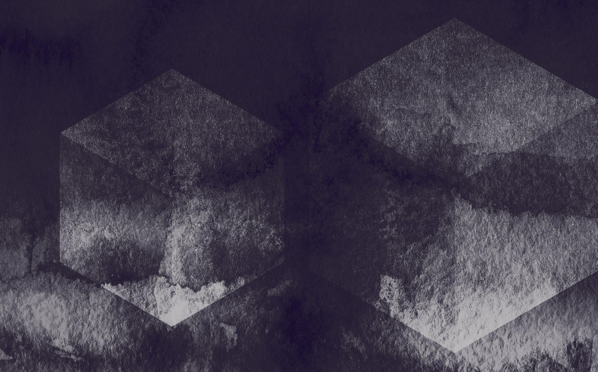
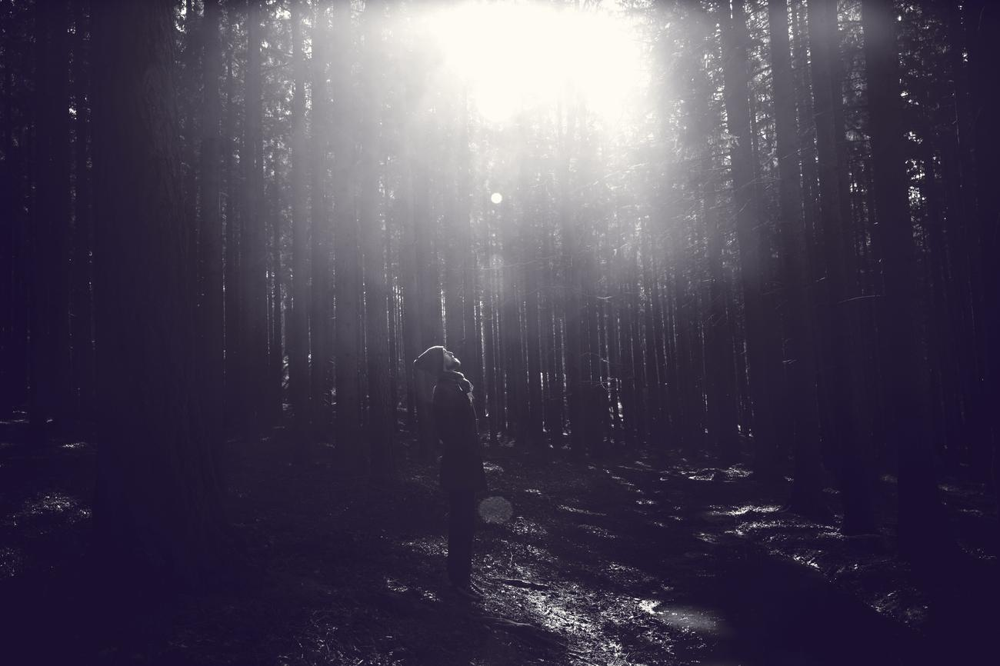
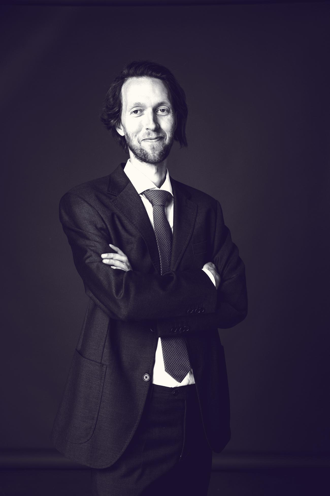
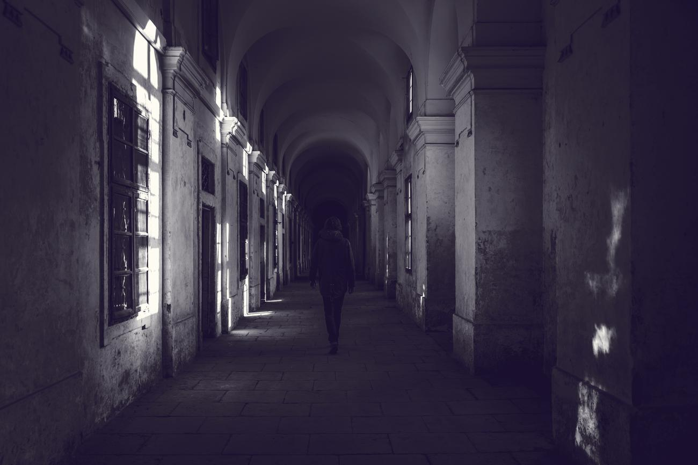
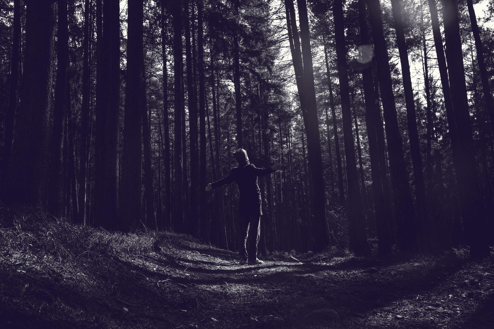
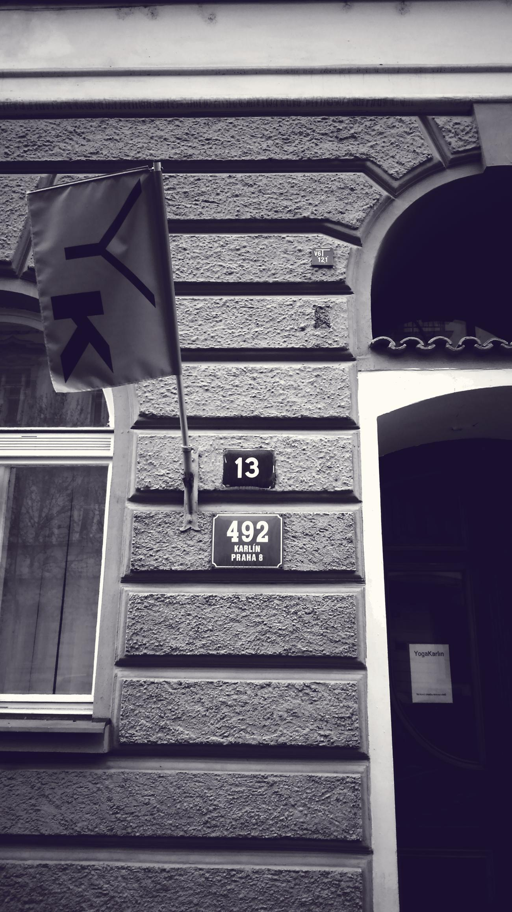
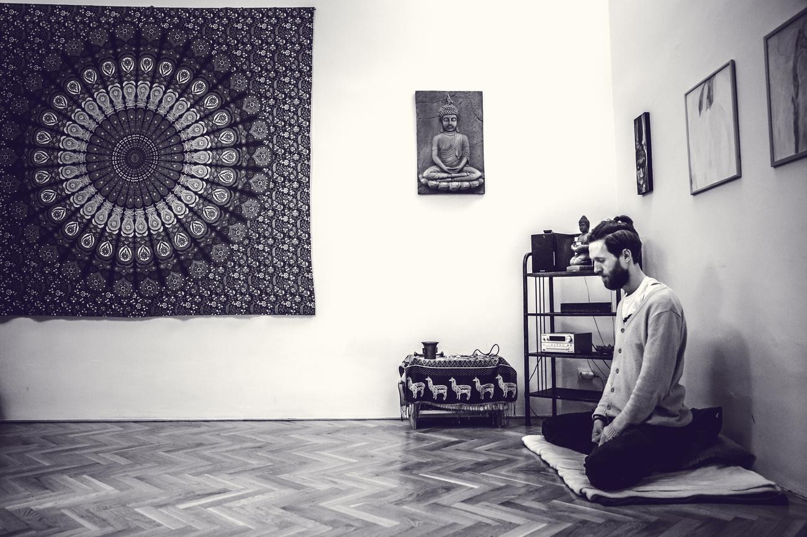
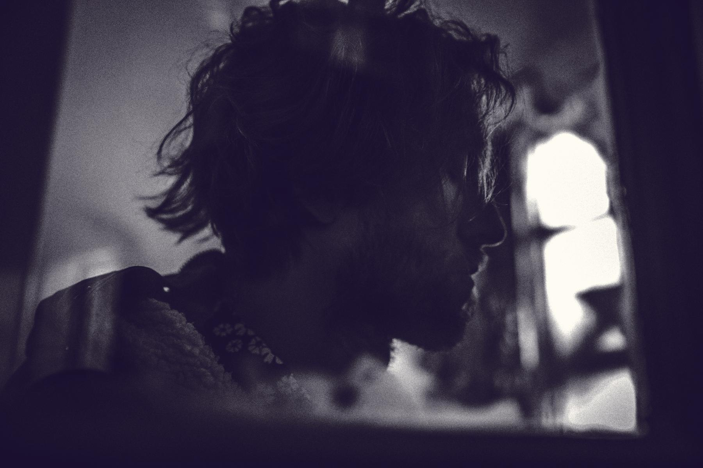
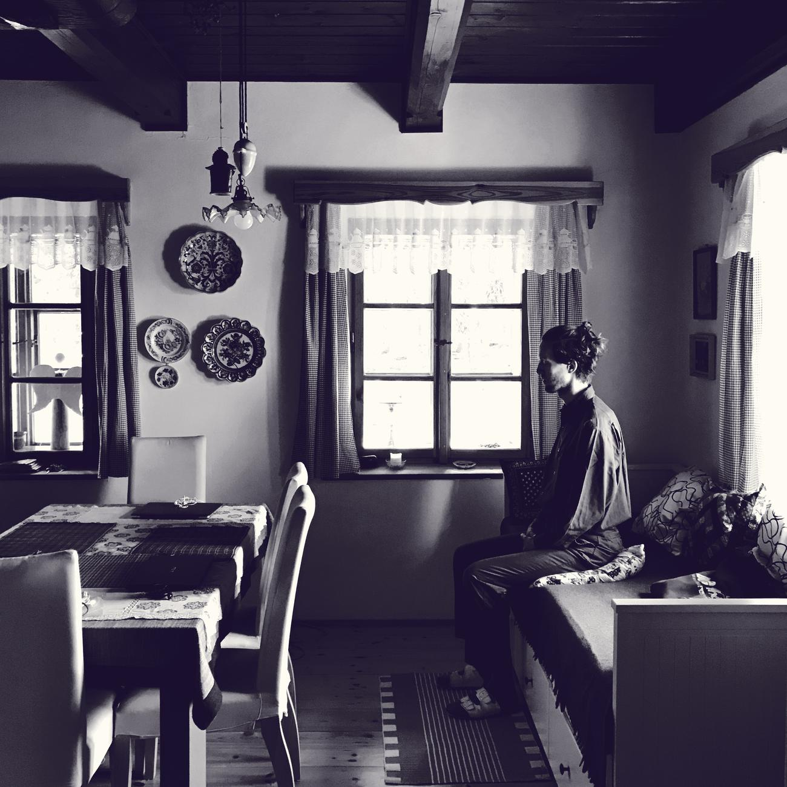

Zlato
Golda
Lepší spořicí účet

Lepší spořicí účet

Co dělá zlato a proč?

Nemůžete předvídat,
můžete se připravit.

Nevybírá pozice, vybírá správce.


Oblíbené studio, skvělí lektoři.

Naučte se meditovat se mnou v Praze

Podněty k životu s čistou myslí

Naučte se meditovat. Kdykoli, odkudkoli.